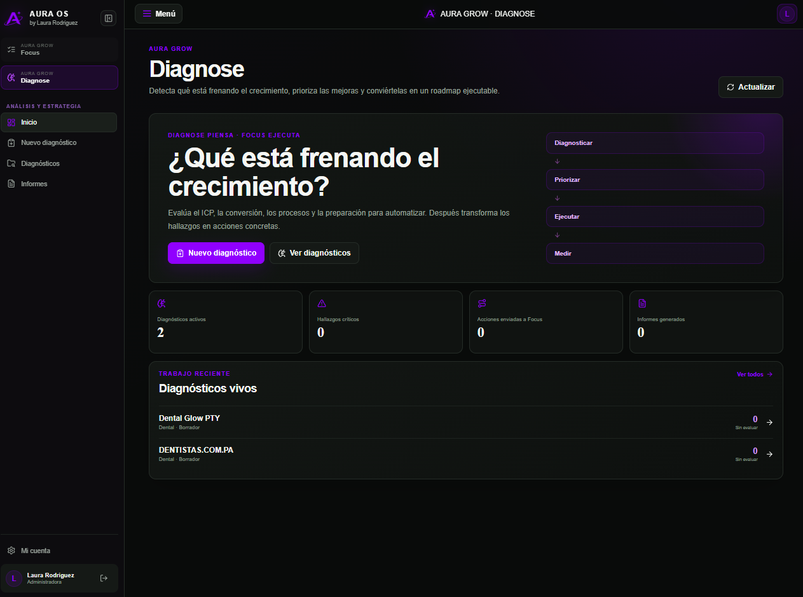

Consulta
Entrada¿Está entrando y quedando registrada?
SISTEMAS DE CONVERSIÓN COMERCIAL · PANAMÁ + LATAM
Growth by Laura diseña e implementa sistemas de conversión comercial. Encontramos dónde se están perdiendo tus oportunidades y construimos el sistema para gestionarlas mejor desde la consulta hasta la venta.

Fuga comercial
Entre una consulta y una venta hay varias oportunidades de avance… y también varios puntos donde una persona puede perderse.
La fuga comercial aparece cuando una oportunidad deja de avanzar, queda sin próximo paso o se pierde antes de convertirse en venta.
“El Pre-Diagnóstico AURA busca señales. El Diagnóstico completo confirma dónde está la fuga y qué debe corregirse.”
¿Está entrando y quedando registrada?
¿Alguien responde a tiempo?
¿Tiene responsable, próximo paso y fecha?
¿Avanza hacia una acción concreta y asiste?
¿Sabemos qué terminó comprando y qué se perdió?
El problema económico
Una empresa puede invertir más en anuncios, contenido o prospección y seguir obteniendo el mismo problema si las consultas llegan a una operación sin responsables, próximos pasos, seguimiento o medición.
Primero convertimos mejor. Después escalamos.
Cuando el proceso funciona y existe capacidad, aumentar demanda sí puede ser la prescripción correcta.
Lo que cambia
La tecnología entra cuando resuelve una pérdida concreta. El sistema primero define qué debe pasar, quién responde y cómo se mide.
Cada oportunidad tiene responsable, estado y próximo paso.
Las personas que mostraron interés no quedan olvidadas.
El sistema asume tareas repetitivas cuando tiene sentido hacerlo.
Sabemos qué avanzó, qué se perdió y dónde.
Cuando la operación puede absorber más demanda, evaluamos cómo aumentar captación.
Cómo trabajamos
No asumimos que necesitas CRM, IA, automatización o más publicidad. Primero reconstruimos el proceso real.
Reconstruimos qué ocurre desde que aparece una oportunidad hasta que compra o abandona.
Identificamos qué debe corregirse primero. No asumimos que necesitas CRM, IA o más publicidad.
Diseñamos el proceso y configuramos las responsabilidades, tecnología, automatizaciones y capacitación necesarias.
Comparamos los mismos indicadores antes y después de la intervención.
Cuando el proceso y la capacidad lo permiten, evaluamos cómo generar más demanda.
Growth by Laura + Aura OS
Aura OS es el sistema que utilizamos para organizar evidencia, mantener contexto y convertir el análisis comercial en información estructurada y medible.
Diagnose organiza el Pre-Diagnóstico AURA, la recopilación de evidencia, la reconstrucción del recorrido comercial, los hallazgos, las prioridades y el roadmap.
La tecnología no sustituye el criterio. Nos ayuda a conservar evidencia, contexto y trazabilidad mientras identificamos qué debe corregirse primero.

Evidencia
Respuestas automáticas que contestaban pero no guiaban, demoras que rompían el momentum y conversaciones que morían por falta de seguimiento.
Leer el análisis ↗
Sobre Laura
Trabajo en la intersección entre crecimiento, marketing, procesos comerciales e inteligencia artificial. Mi enfoque es convertir ideas y herramientas en sistemas concretos que el equipo realmente pueda usar.
No vendo tecnología por venderla. Primero identifico qué está frenando la conversión y después diseño la intervención adecuada: proceso, capacitación, CRM, automatización, IA o captación cuando corresponda.
Preguntas frecuentes
No. Es una lectura preliminar de aproximadamente 3 minutos. Busca señales de fuga comercial; todavía no revisa conversaciones, datos ni procesos reales.
No. El análisis parte de tu operación actual. La tecnología se prescribe solamente si la evidencia demuestra que hace falta.
No. Growth by Laura trabaja con empresas de servicios y otros negocios donde una oportunidad debe avanzar por un proceso antes de convertirse en venta.
Pre-Diagnóstico AURA
Completa el Pre-Diagnóstico AURA gratuito. En aproximadamente 3 minutos podremos identificar qué áreas de tu recorrido comercial conviene revisar con mayor profundidad.
Pre-Diagnóstico → Diagnóstico AURA → Prescripción → Implementación → Medición